Model definitions¶
At present, pyAnno implements three probabilistic models of data annotation:
1. Model A , a three-step generative model from the paper [Rzhetsky2009].
2. Model B-with-theta , a multinomial generative model from the paper [Rzhetsky2009].
3. Model B, a Bayesian generalization of the model proposed in [Dawid1979].
Glossary¶
- annotations
- The values emitted by the annotator on the available data items.
In the documentation,
 , indicates the i-th annotation for annotator j.
, indicates the i-th annotation for annotator j. - labels
- The possible annotations. They may be numbers, or strings, or any discrete set of objects.
- label class, or just class
- Every set of labels is ordered and numbered from 0 to K. The number
associated with each label is the label class. The ground truth label class
for each data item, i, is indicated in the documentation as
 .
. - prevalence
- The prior probability of label classes
- accuracy
- The probability of an annotator reporting the correct label class
Model A¶
Model A defines a probability distribution over data annotations with a loop design in which each item is annotated by three users. The distributions over annotations is defined by a three-steps generative model:
- First, the model independently generates correctness values for the triplet of annotators (e.g., CCI where C=correct, I=incorrect)
- Second, the model generates an agreement pattern compatible with the correctness values (e.g., CII is compatible with the agreement patterns ‘abb’ and ‘abc’, where different letters correspond to different annotations
- Finally, the model generates actual observations compatible with the agreement patterns
More in detail, the model is described as follows:
Parameters 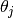 control the prior probability that annotator
 is correct. Thus, for each triplet of annotations
for annotators
is correct. Thus, for each triplet of annotations
for annotators  ,
,  , and
, and  , we have
, we have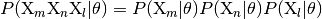
where
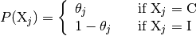
Parameters
 control the probability of observing an
annotation of class
control the probability of observing an
annotation of class  over all items and annotators. From these
one can derive the parameters
over all items and annotators. From these
one can derive the parameters  , which correspond
to the probability
of each agreement pattern according to the tables published in
[Rzhetsky2009].
, which correspond
to the probability
of each agreement pattern according to the tables published in
[Rzhetsky2009].
See [Rzhetsky2009] for a more complete presentation of the model.
Model B-with-theta¶
Model B-with-theta is a multinomial generative model of the annotation process. The process begins with the generation of “true” label classes, drawn from a fixed categorical distribution. Each annotator reports a label class with some additional noise.
There are two sets of parameters: 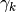 controls the
prior probability of generating a label of class .
The accuracy parameter 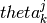 controls the probability of annotator
reporting class 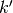 given that the true label is .
An important part of the model is that the error probability is controlled
by just one parameter per annotator, making estimation more robust and
efficient.
Formally, for annotations and true label classes :
The probability of the true label classes is
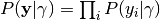,
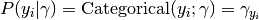.
The prior over the accuracy parameters is
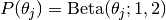.
And finally the distribution over the annotations is
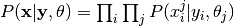,
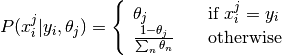.
See [Rzhetsky2009] for more details.
Model B¶
Model B is a more general form of B-with-theta, and is also a Bayesian
generalization of the earlier model proposed in [Dawid1979]. The generative
process is identical to the one in model B-with-theta, except that
a) the accuracy parameters are represented by a full tensor
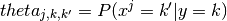, and b) it defines prior
probabilities over the model parameters,  , and
, and  .
.
The complete model description is as follows:
The probability of the true label classes is
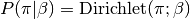
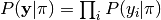,
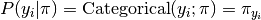
The distribution over accuracy parameters is
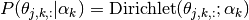
The hyper-parameters 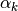 define what kind of error distributions are more likely for an annotator. For example, they can be defined such that 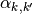 peaks at 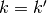 and decays for becoming increasingly dissimilar to
. Such a prior is adequate
for ordinal data, where the label classes have a meaningful order.The distribution over annotation is defined as
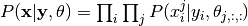,
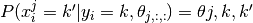.
References¶
| [Rzhetsky2009] | (1, 2, 3, 4, 5) Rzhetsky A., Shatkay, H., and Wilbur, W.J. (2009). “How to get the most from your curation effort”, PLoS Computational Biology, 5(5). |
| [Dawid1979] | (1, 2) Dawid, A. P. and A. M. Skene. 1979. Maximum likelihood estimation of observer error-rates using the EM algorithm. Applied Statistics, 28(1):20–28. |